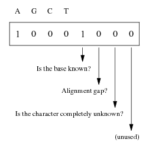
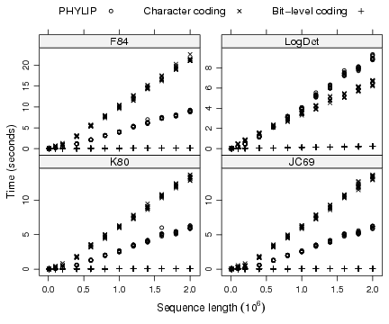
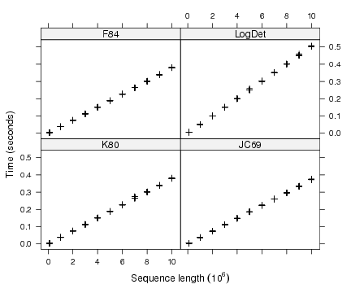

A Bit-Level Coding Scheme for NucleotidesEmmanuel Paradis |
In this document, I present the coding scheme used in ape since version 1.10 for DNA sequences. Its aim is to provide fast algorithms and efficient programs for comparing sequences, particularly to compute evolutionary distances. I also present results from a few simulations to assess the gain in computing times compared to the previous coding scheme.
The main idea behind the coding scheme is to use the individual bits to store information relative to each nucleotide in a sequence. A bit can take the value 0 or 1, so it is appropriate to code presence or absence of a given base. So, in a first approach, we could use four bits to code the state of a nucleotide; for instance, 1000, 0100, 0010, and 0001, for adenine (A), guanine (G), cytosine (C), and thymine (T), respectively. This scheme could be used to code uncertainty, for instance, 1100 would mean ‘A or G’ (i.e., a purine). However, almost all computers read and write bits in groups of eight (bytes). Consequently, a program cannot read (at least directly) whether an individual bit is 0 or 1.
So the approach sketched above should be extended to include four more bits that could be used to store additional information on the nucleotide. Doing this way, a nucleotide is coded with the smallest unit of information in a computer, that is a byte. Figure 1 summarizes the proposed scheme. The bits 1–4 are used as described above. The fifth bit is set to 1 if the base is known exactly (i.e., only one of the bits 1–4 is set to 1), 0 otherwise. The sixth and seventh bits are used for aligned sequences: the former is set to 1 if an alignment gap has been inserted, and the latter is set to 1 if the character is completely unknown. The eighth bit is currently unused. Table 1 gives the detailed coding scheme and the correspondance with IUPAC ambiguity code.1

Figure 1: Use of the eight bits of the bit-level coding scheme.
The proposed bit-level coding scheme has the same memory requirements than the commonly used coding based on the IUPAC ambiguity code if the ASCII code, or another single-byte code; is used. However, uncertainty is coded implicitly in the IUPAC code. For instance, ‘A or G’ is coded by the letter R. Consequently, querying whether a particular base is known exactly requires to check whether the letter is among A, G, C, or T. With the bit-level coding scheme, it is only needed to check whether the fifth bit is set to 1. This operation is done in some computer languages using bitwise operators (see Appendix).
Instead of considering the 8 bits as a character from the (extended) ASCII code, they are here considered as 8-bit unsigned integers, and so take values between 0 and 255 (= 28 − 1). Consequently, usual numerical operators can be combined with bitwise operators to compare bases efficiently. As an example, let us consider the case where one wants to compare two bases. With the character coding scheme, this requires to run through a series of string comparisons according to the ambiguity code. With the bit-level coding scheme, the bitwise operator “AND” is used to compare the two bases: it sets the bits of the result to 1 if the input bits are both set to 1, and 0 otherwise. So, if two bases are different, the result of this comparison has its four first bits set to 0 (0000xxxx, where x is either 0 or 1). It is then only necessary to compare this result with the next larger 8-bit integer 00010000 (= 16): if it is less than 16, then both bases are different.
An advantage of the bit-level coding here is that this comparison procedure is robust to uncertainty on the state of the nucleotides. For instance, though the two letters A and R are different, the nucleotides they code for may not be different because since R codes for ‘A or G’. With the bit-level code, the first four bits of A and R are 1000 and 1100, respectively. The operation ‘1000 AND 1100’ returns 1000, indicating that the two nucleotides may not be different. On the other hand, the same operation on 1000 and 0011 (= Y = ‘C or T’) returns 0000, so that we are sure that both nucleotides are different, even though one is not known with certainty. The Appendix gives further detailed examples on more specific comparisons that may be used in computing some evolutionary distances.
The bit-level coding scheme can be implemented with any system or language that can manipulate 8-bit unsigned integers, and that has bitwise operators (e.g., C or C++). The current implementation has been done with the C language using the unsigned char data type. It is available as a series of macro functions (see Appendix). The unsigned char data type may also be used in R where it is called "raw" data type.
Some utility functions are also available to read and write sequence files, transform sequences from and to the bit-level coding scheme, compute base frequencies, identify segregating sites, perform deletion of sites with gaps in a set of aligned sequences, and compute some summary statistics such as nucleotidic diversity, or the proportion of pairwise differences. Computation of distances is possible under eleven evolutionary models (JC69, K80, F81, K81, F84, BH87, T92, TN93, GG95, LogDet, and paralinear), as well as the corresponding variances. A γ-correction for inter-sites variation is possible when available from the literature (JC69, K80, F81, and TN93).
Nucleotide IUPAC code Bit-level code Valuea A A 10001000 136 G G 01001000 72 C C 00101000 40 T T 00011000 24 A or G R 11000000 192 A or C M 10100000 160 A or T W 10010000 144 G or C S 01100000 96 G or T K 01010000 80 C or T Y 00110000 48 A or G or C V 11100000 224 A or C or T H 10110000 176 A or G or T D 11010000 208 G or C or T B 01110000 112 A or G or C or T N 11110000 240 Alignement gap (–) 00000100 4 Unknown character (?) 00000010 2 a 8-bit unsigned integer
I assessed the gain in computing time of evolutionary distances resulting from the bit-level coding scheme. Three programs were selected: PHYLIP version 3.61, the character coding scheme used in ape version 1.9-2, and the bit-level coding scheme implemented in C and called from R (as implemented in ape version 1.10 and later). Two nucleotidic sequences were randomly generated so that 10% of the sites were changed randomly between them. Thus, on average 7.5% of the sites were actually different between both sequences. A few simulations showed that the proportion of variable sites had no effect on computing times. The sequence length took the values 104, 105, 2 × 105, then up to 2 × 106 with steps of 2 × 105. The distances between each pair of sequences were calculated with the four models available in PHYLIP (JC69, K80, F84, and LogDet) using the three programs successively. All the simulations were done with R version 2.4.0; the computing times were recorded with R’s function system.time. This was replicated 10 times for each sequence length. A further set of simulations were run using only the bit-level coding scheme with sequence lengths equal to 105, and from 106 up to 107 with steps of 106. The same four models were used.
All simulations were done with a computer equiped with a processor at 2.33 GHz with 2 Gb of RAM running Linux Knoppix 5.0.1 (kernel 2.6.17).
For a given program and a given model, the computing times were roughly linearly related with the sequence length, though it seems that computing times are overestimated by a linear approximation for the smallest sequence lengths (Fig. 2). Overall, the character coding scheme used in ape 1.9-2 gave the worst performance, the bit-level coding scheme gave the best one, and PHYLIP gave intermediate results. The exception was with the LogDet model where PHYLIP performed better than the character coding scheme for sequence lengths up to 6 × 105 nucleotides, but the difference was opposite for longer sequences.

Figure 2: Comparison of the computing times among different programs for four different models with sequences up to 2 × 106 nucleotides.
The detailed simulations with the bit-level coding scheme showed that its computing time was around 0.1 sec for 2 × 106 nucleotides (Fig. 3). For the same sequence length, the computing times of both other programs were around 6 sec or longer depending on the model. The bit-level coding scheme is thus at least 60 times faster. We can extrapolate linearly these computing times to get 5 × 10−8 × L and 3 × 10−6 × L, respectively, where L is the sequence length. So for L = 107, we find a computing time for the bit-level coding scheme ≈ 0.5 sec, which agrees well with the observed results of the detailed simulations (Fig. 3). For the same sequence length, the computing time of ape 1.9-2 or PHYLIP is predicted to be at least 30 sec. L should be understood as the number of pairwise comparisons, that is, in the case of computing a distance matrix among n sequences, the product of the sequence length with n(n−1)/2.

Figure 3: Computing times for four different models using the bit-level coding scheme for sequences up to 107 nucleotides.
Interestingly, the longest computations with the bit-level coding scheme were achieved with the LogDet model, whereas this was with F84 with the character coding scheme or PHYLIP.
The coding scheme for nucleotides presented in this paper results in very substantial gains in computing times when comparing sequences. The main reason of this is that the operators used for comparing bases are more efficient than the usual operators for comparing character strings. There is also a contrast between the character coding scheme and the bit-level coding scheme in the way the data are stored in R. In the former, each nucleotide is stored as a single character string, so that reading the different sites of a sequence requires to look for as many data arrays as sites. On the other hand, with the bit-level coding scheme, each sequence is stored as a single array, so that reading the different nucleotides is more direct in terms of memory addressing. In fact, in the present implementation in R, even a set of sequences is stored as a single data array.
The comparison between PHYLIP and ape is difficult because the former requires to read the data on the disk before computing the distance effectively (the results are written on the disk, and this is included in the computing time as well, but this is likely to be negligible since only one distance was calculated). In spite of this, PHYLIP outperformed the character coding scheme for the longest sequences, except for the LogDet model. This model requires to compute the 4 × 4 contingency table of the two sequences which is probably done in a more efficient way in R than in PHYLIP.
Williams & Zobel [2] proposed a bitwise code for the compression of nucleotide databases in order to increase the speed of sequence searches. Cameron & Williams [1] used this coding scheme to improve the performance of BLASTN. This scheme uses a 2-bit code where each possible two-bits pattern codes for a different base: 00, 10, 01, and 11, for A, G, C, and T, respectively. It cannot code missing nucleotides which need to be handle in a special way before the sequence can be processed: the missing nucleotides are replaced randomly by one of the four bases; the positions of these sites are stored in an additional array appended to the sequence (the missing data are restored after processing). The main advantage of such a 2-bit coding scheme is that it uses four times less memory to store the same sequence. However, it is suitable for simple comparisons such as those performed in a BLAST search, hence the possibility to compare four sites simultaneously. The computation of evolutionary distances requires more complex pairwise comparisons.
[1] Cameron M. & Williams H. E. 2007. Comparing compressed sequences for faster nucleotide BLAST searches. IEEE/ACM Trans. Comput. Biol. Bioinform. in press. goanna.cs.rmit.edu.au/~mcam/nucompress.pdf.
[2] Williams H. & Zobel J. 1997. Compression of nucleotide databases for fast searching. Computer Applications in the Biosciences 13: 549–554.
The table below gives the currently available functions for the analysis of nucleotidic sequences coded with the bit-level coding scheme. They are actually defined in C as macros, and can be used like functions.
| Function | C code | Value returned |
| KnownBase(a) | a & 8 | 8 if a is known surely |
| IsAdenine(a) | a == 136 | 1 if a is adenine |
| IsGuanine(a) | a == 72 | 1 if a is guanine |
| IsCytosine(a) | a == 40 | 1 if a is cytosine |
| IsThymine(a) | a == 24 | 1 if a is thymine |
| IsPurine(a) | a & 55 | 0 if a is a purine |
| IsPyrimidine(a) | a & 199 | 0 if a is a pyrimidine |
| DifferentBase(a, b) | (a & b) < 16 | 1 if a and b are different surely |
| SameBase(a, b) | KnownBase(a) | 1 if a and b are the same surely |
| && a == b |
The value returned is 0 if the condition is not met, except for IsPurine and IsPyrimidine where a positive non-null value is returned. These two functions may be defined as a > 63 and a < 64, respectively, if the base is known surely; in both cases, the value 1 is returned if the condition is met, and 0 otherwise. This is the form used in the simulations reported in this paper.
It is possible to build more complicated functions while keeping the simplicity and efficiency of the bit-level coding scheme. For instance, the two following codes are used to compute the Tamura–Nei distance (TN93).
| Code | Value returned |
| (a | b) == 200 | 1 if one of the base is adenine and the other one is guanine, 0 otherwise |
| (a | b) == 56 | 1 if one of the base is cytosine and the other one is thymine, 0 otherwise |
This document was translated from LATEX by HEVEA, and further edited by hand.